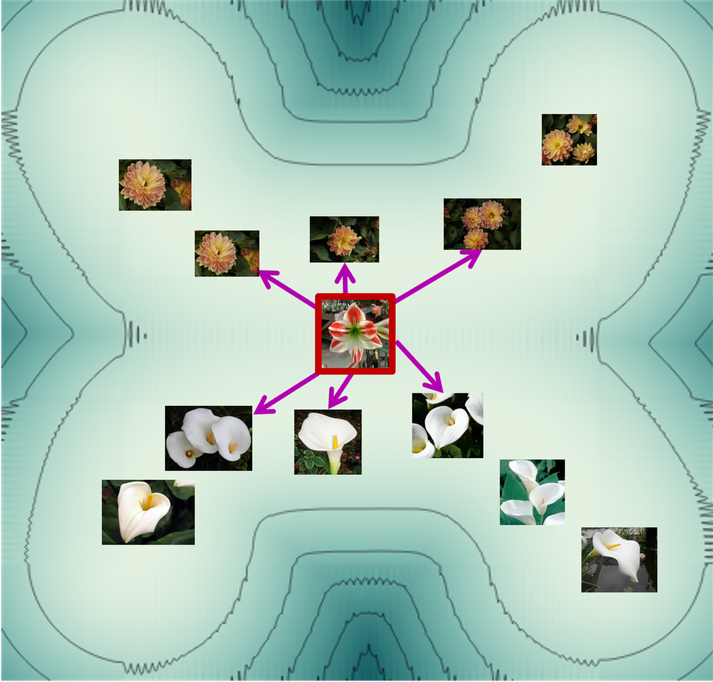
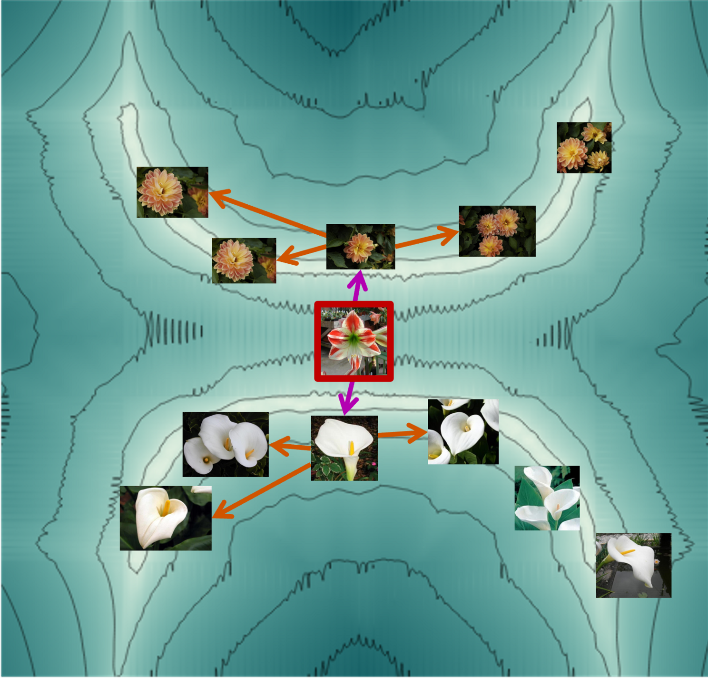
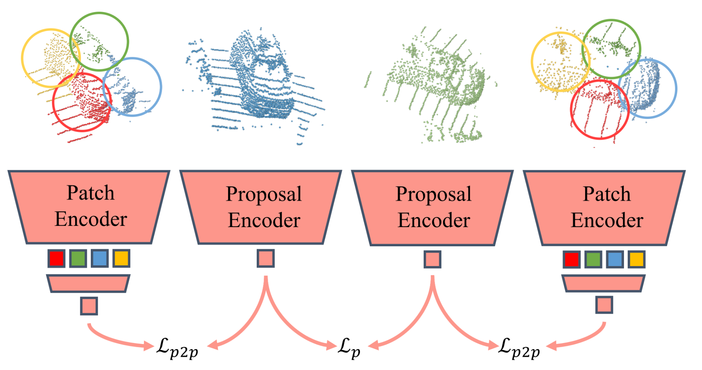

K-NNN: Nearest Neighbors of Neighbors for Anomaly Detection O. Nizan & A. Tal · WACV Workshops 2024 · Code k-NN k-NNN
FPGAN-Control: A Controllable Fingerprint Generator for Training With Synthetic Data A. Shoshan, N. Bhonker, E. Ben Baruch, O. Nizan, I. Kviatkovsky, J. Engelsma, M. Aggarwal & G. Medioni · WACV 2024 · Code
Patchcontrast: Self-supervised pre-training for 3D object detection O. Shrout, O. Nitzan, Y. Ben-Shabat, A. Tal · arXiv 2023 
knnn A simple implementation of the K-Nearest Neighbors of Neighbors (k-NNN) algorithm for anomaly detection.